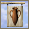
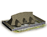
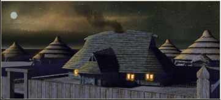
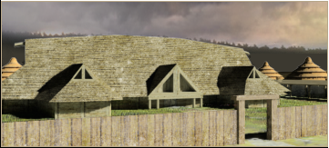

Imperium
Imperium Tavern (Leisure) chain
2 levels, each replacing the one before it — you upgrade in place rather than building alongside.
Tavern (Leisure) → Feasting Hall (Leisure)
Pictures are the game's own building art. Where a culture ships none of its own, the game falls back to another culture's, and that is what is shown here.
Levels at a glance
| Level | Cost | Build time | Minimum settlement | Upgrades to | Level | Cost | Build time | Minimum settlement | Upgrades to | ||
|---|---|---|---|---|---|---|---|---|---|---|---|
 | Tavern (Leisure) | 3,000 | 3 | large town | Feasting Hall (Leisure) |  | Feasting Hall (Leisure) | 6,000 | 6 | city | — |
Costs in denarii, build time in turns.
Tavern (Leisure)

Drink! Drink! Drink! Life is short! The tavern fire is warm! There are heroic stories to tell! Let everyone hear how great it is to be one of our people! A Tavern is the perfect place for everyone to enjoy themselves, and let worries be drowned in ale and mead. Any man who leaves without a smile on his face and an urge to empty his bladder hasn't really been drinking like a true warrior!
Wording varies by culture: 2 versions of this description exist in the game files.
| Cost | 3,000 denarii | Build time | 3 turns | Minimum settlement | large town |
| Upgrades to | Feasting Hall (Leisure) |
What it does
- +1 public order (happiness)
- taxable income -10 to -5, scaling with settlement size (player only)
Show 11 effects that apply only in the circumstances shown
- +1 population health — only when
is_toggled "tavern changes" - -5 taxable income — only when
size1 and building_present_min_level taverns tavern and not is_player - -6 taxable income — only when
size2 and building_present_min_level taverns tavern and not is_player - -6 taxable income — only when
size3 and building_present_min_level taverns tavern and not is_player - -7 taxable income — only when
size4 and building_present_min_level taverns tavern and not is_player - -7 taxable income — only when
size5 and building_present_min_level taverns tavern and not is_player - -8 taxable income — only when
size6 and building_present_min_level taverns tavern and not is_player - -8 taxable income — only when
size7 and building_present_min_level taverns tavern and not is_player - -9 taxable income — only when
size8 and building_present_min_level taverns tavern and not is_player - -9 taxable income — only when
size9 and building_present_min_level taverns tavern and not is_player - -10 taxable income — only when
size10 and building_present_min_level taverns tavern and not is_player
Religious belief — spreads 13 beliefs, by how much depending on what the region already believes.
Show the 13 beliefs
- Baltic +1
- Bithynian +1
- Celtic +1
- Dardanian +1
- delmato_pannonian (no name in the text files) +1
- Germanic +1
- Illyrian +1
- Liburnian +1
- Paeonian +1
- Scythian +1
- Thracian +1
- Triballian +1
- Venetic +1
Feasting Hall (Leisure)

Feasting your men is how bonds of loyalty are made strong.
A noble warlord should always be generous to his men and reward their loyal service with never ending feasting and drinking! Good companionship and strong ale wash away strife and the friendships made here will mean a stronger battle-line when the time of need comes again. The Greeks may scoff at our drinking of ales and unwatered wine, but does this not speak more to how feeble they are? A true man and warrior has his drink unadulterated and he honours the gods by his inebriation.
| Cost | 6,000 denarii | Build time | 6 turns | Minimum settlement | city |
What it does
- +2 public order (happiness)
- taxable income -15 to -10, scaling with settlement size (player only)
Show 12 effects that apply only in the circumstances shown
- +1 population health — only when
is_toggled "tavern changes" - +1 public order (law) — only when
is_toggled "tavern changes" - -10 taxable income — only when
size1 and building_present_min_level taverns bardic_circle and not is_player - -11 taxable income — only when
size2 and building_present_min_level taverns bardic_circle and not is_player - -11 taxable income — only when
size3 and building_present_min_level taverns bardic_circle and not is_player - -12 taxable income — only when
size4 and building_present_min_level taverns bardic_circle and not is_player - -12 taxable income — only when
size5 and building_present_min_level taverns bardic_circle and not is_player - -13 taxable income — only when
size6 and building_present_min_level taverns bardic_circle and not is_player - -13 taxable income — only when
size7 and building_present_min_level taverns bardic_circle and not is_player - -14 taxable income — only when
size8 and building_present_min_level taverns bardic_circle and not is_player - -14 taxable income — only when
size9 and building_present_min_level taverns bardic_circle and not is_player - -15 taxable income — only when
size10 and building_present_min_level taverns bardic_circle and not is_player
Religious belief — spreads 13 beliefs, by how much depending on what the region already believes.
Show the 13 beliefs
- Baltic +2
- Bithynian +2
- Celtic +2
- Dardanian +2
- delmato_pannonian (no name in the text files) +2
- Germanic +2
- Illyrian +2
- Liburnian +2
- Paeonian +2
- Scythian +2
- Thracian +2
- Triballian +2
- Venetic +2
What the shorthands in those conditions stand for (10)
These are the mod's own, quoted from the game files unchanged.
| Shorthand | Stands for | Shorthand | Stands for | Shorthand | Stands for |
|---|---|---|---|---|---|
size1 | major_event "empire_size1" | size10 | major_event "empire_size10" | size2 | major_event "empire_size2" |
size3 | major_event "empire_size3" | size4 | major_event "empire_size4" | size5 | major_event "empire_size5" |
size6 | major_event "empire_size6" | size7 | major_event "empire_size7" | size8 | major_event "empire_size8" |
size9 | major_event "empire_size9" |